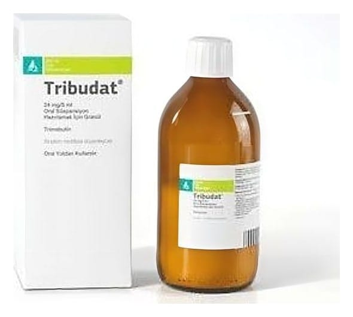

Tribudat 4,8 mg/ml Oral Suspansiyon Hazırlamak İçin Granül, 250 ml

Ne için kullanılır
KT · Bölüm 1TRİBUDAT®, 250 ml’lik cam şişelerde, 5 ml’lik ölçeği ile birlikte sunulur. Açık portakal renginden - portakal rengine, yabancı partikül içermeyen homojen kristalize toz görünümündedir.
TRİBUDAT®'ın etkin maddesi trimebutin sindirim hareketliliğini düzenleyen bir ajandır. Sindirim kas hareketlerinde azalma varsa sindirim kaslarını uyarıcı; sindirim kas hareketlerinde artış varsa oradaki spazmı çözücü olarak etki gösterir. Bu düzenleyici etkinlik tüm sindirim kanalı boyunca görülür. Hareket bozukluklarına bağlı olan fonksiyonel sindirim hastalıklarında; fizyolojik hareketliliği yeniden düzenler.
TRİBUDAT®, İrritabl bağırsak sendromu (karın ağrısı, gaz, kramp, spazm, şişkinlik, ishal ve/veya kabızlık gibi belirtilerle seyreden hastalık) belirtilerinin tedavisinde, Fonksiyonel sindirim bozuklukları (altta yatan bir hastalığın olmadığı/belirlenemediği, sindirim sisteminin düzenli çalışmadığı, barsak hareketlerinin düzgün olmadığı durumlar) belirtilerinin tedavisinde, Mide ve bağırsaklarla ilgili çeşitli belirtilerin (mide ve barsaklarda görülen farklı, birden fazla belirti) tedavisinde kullanılır.